The Final Escape
Itch.ioAbout
'The Final Escape' is a horror game where your goal is to escape a serial killer. If he finds out that you are escaping, he'll make sure that you won't try again. This game was made in Unity during a course together with 10 others, which included 3D-artists, 2D-artists, Animators, Game Designers, Musicans and Sound Designers.
Info
Made in: 2024

Role: Programmer

Group size: 11

Time frame: 12 weeks

Engine: Unity (C#)
What I Worked On
- - Interaction System
- - Item pickup/drop and inspection
- - Light Baking
- - Parts of UI
What I Learned
This project made me learn more about:
- - Collaborating with peers in larger scale groups
- - Working with FMOD
- - Light-baking in Unity